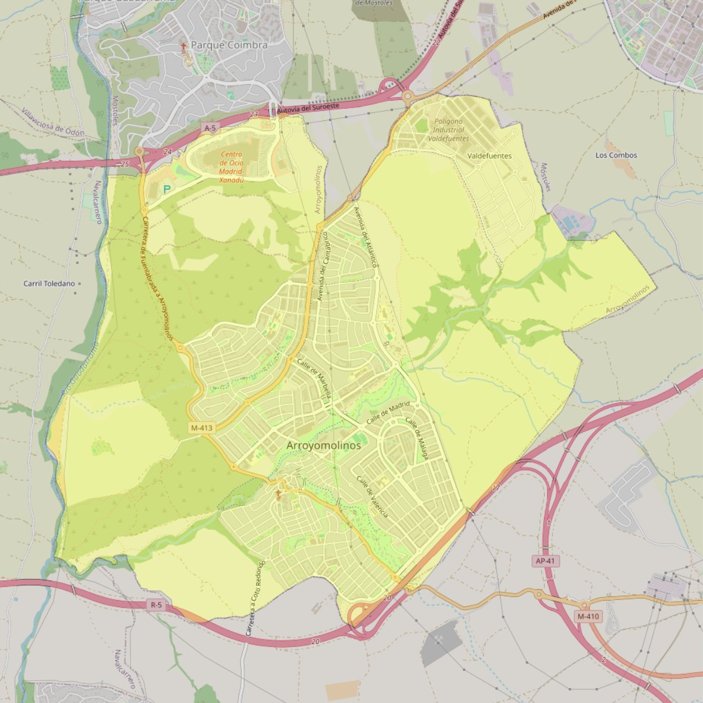

Asunción de Nuestra Señora

- Arciprestazgo
- Griñón
- Población
- Arroyomolinos
- Dirección postal
- c/ Batres, 1
- Código postal
- 28939
- Extensión
- 21,50 km² (2.150 ha)
- Teléfono
- 916 095 462
- Correo electrónico
- asunciondens-arroyomolinos@diocesisgetafe.es